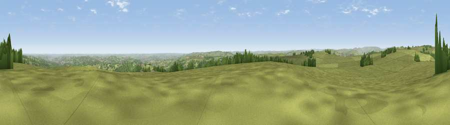

Viewpoint near Holmesfield
#7304 in England · top 4% of its area beats it · near HolmesfieldWhere it is
The exact computed spot (SK 28525 78762). Click the marker for map links.
The view, rendered

A 360° render of this exact spot computed from the terrain model, tree cover and land cover — summer colours, afternoon light, calibrated against photographs of famous viewpoints. Real trees, hedges and buildings will differ in detail.
The panorama
Grey silhouette: terrain skyline in each direction (720 bearings, Earth curvature and refraction included). Dashed green: skyline with trees (+15 m) and buildings (+8 m) as obstacles. Blue strip: how far the ground is visible on each bearing.
Where the view opens
Wedge length = distance to the farthest visible ground on that bearing (vegetation-aware). Rings at 10, 25 and 50 km.
What fills the view
64% grassland · 21% woodland · 8% cropland · 7% built-up
Angular shares of the visible panorama (visual magnitude), not map area. Landscape diversity 0.44 (0–1 Shannon).
Key numbers
More beautiful places nearby
The staircase of upgrades: each row has a higher view potential than everything closer. Driving times are estimates from straight-line distance, calibrated against real road routing — check an actual route before setting out.
| Place | Direction | Drive | Score |
|---|---|---|---|
| Viewpoint near Holmesfield | ENE · 0 km | ~2 min | 69.4 |
| Viewpoint near Hathersage | NW · 5 km | ~12 min | 70.9 |
| High Rake | SW · 9 km | ~18 min | 71.1 |
| Viewpoint near Thornhill | NW · 13 km | ~24 min | 74.1 |
| Viewpoint near Wharncliffe Side | N · 18 km | ~31 min | 75.2 |
| Tissington Hill | SSW · 29 km | ~46 min | 75.5 |
| Wild Bank | WNW · 35 km | ~54 min | 76.2 |
| Viewpoint near Carrbrook | NW · 36 km | ~55 min | 77.1 |
53.30505, -1.57340 · source: screening · position refined by local search. Computed location — check access rights before visiting.